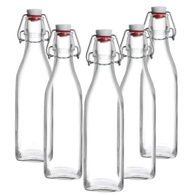

-Verde: Descarte de vidros;
-Azul: Descarte de papéis e papelões;
-Vermelho: Descarte de plásticos;
-Amarelo: Descarte de metais;
-Laranja: Descarte de residuos perigosos;
-Branco: Descarte de lixos hospitalares;
-Marrom: Descarte de residuos orgânicos;
-Preto: Descarte de madeiras;
-Cinza: Descarte de materias não reciclados;
-Roxo: Descarte de residuos radioativos.
Artesanato, roupas, acessórios... As opções são muitas. Mas até mesmo quem não tem dons artísticos pode contribuir.
Separando o lixo de sua casa em seco e orgânico, você já facilita
o trabalho dos catadores, que podem enviar os materiais feitos de PET para as usinas de reciclagem.
No Brasil ser um dos países do mundo que mais reciclam garrafas PET,
duzentas mil toneladas são descartadas nos lixões todos os anos,
podendo liberar substâncias tóxicas no meio ambiente,
durante o processo de decomposição.

-Garrafa PET:Pode demorar entre 200 a 600 anos para se decompor.
-Vidro:Pode demorar até 1 milhão de anos para se decompor, dependendo das condições ambientais.
-Polietileno (PE) e polipropileno (PP):Podem levar de 100 a 400 anos para se decompor.
-Poliestireno (PS):Pode levar 500 anos ou mais para se decompor.